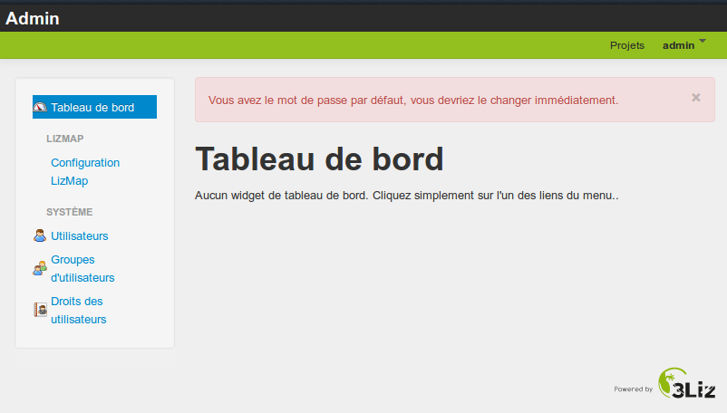

Présentation générale de l’interface d’administration
Accéder à l’interface d’administration
Par souci de sécurité, aucun lien ne mène vers l’interface d’administration. L’adresse est la suivante
http://mondomaine.lizmap.3liz.com/admin.php
Identifiants temporaires
- login = admin
- mot de passe = admin
- Application
- Se connecter à votre interface

Modifier son mot de passe
Une fois connecté, on peut modifier son mot de passe
- Cliquer sur votre login dans le menu en haut à droite puis Votre compte
- Cliquer sur le bouton Changer votre mot de passe
- Donner le nouveau mot de passe, confirmer et enregistrer
- Attention
- Il est impératif de modifier votre mot de passe. Utilisez un mot de passe complexe qui mélange chiffres, lettres et ponctuation
Rappel sur les répertoires Lizmap
Lizmap Web Client peut utiliser les cartes QGIS enregistrées dans différents répertoires sur le serveur.
- Un répertoire Lizmap est un dossier sur le serveur où sont stockés un ou plusieurs projet QGIS et les données liées.
- On peut utiliser les répertoires pour regrouper des projets liés par une thématique
- On peut utiliser les répertoires pour gérer les droits d’accès sur les cartes